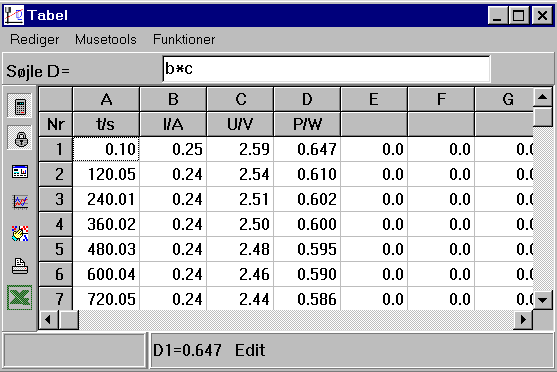
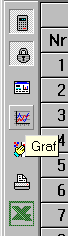
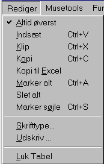
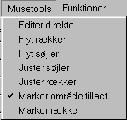
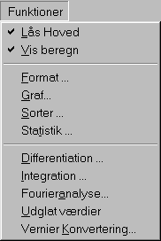

Der kan måles på over 100 forskellige apparater i Datalyse og apparaterne er meget forskellige. Ved måling af (t, f(t)) tegnes en graf og samtidigt skrives resultaterne i tabellen. Ved tabelmålinger skrives resultaterne kun i tabellen. Tabelmålinger kan være:
Efter endt måling kan data behandles i tabellen, idet der kan udføres beregninger på de enkelte søjler. I tabellen ovenfor beregnes P = U·I, idet søjle tallene i søjle D udregnes som b*c.
Tabellen indeholder en række værktøjer, som kan aktiveres i panelet til venstre eller vha. tabellens menupunkter:
| Panel | Menuer: | ||
 |
 |
 |
 |
Nye funktioner kan komme til, når behovet opstår eller brugerne ønsker det. Således er »Kopi til Excel« indsat efter ønske fra brugerne.